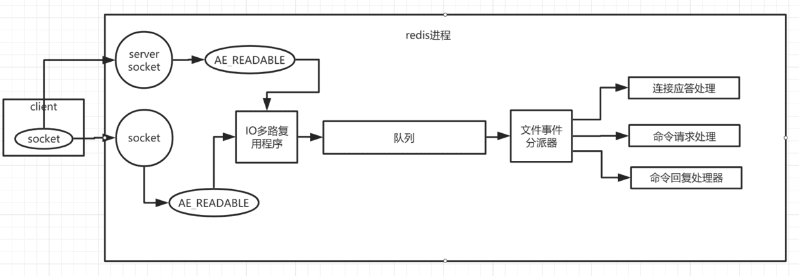
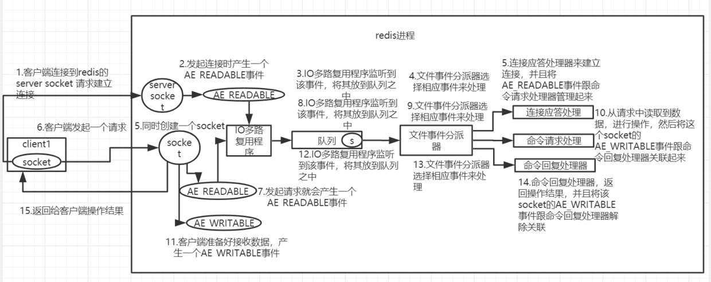
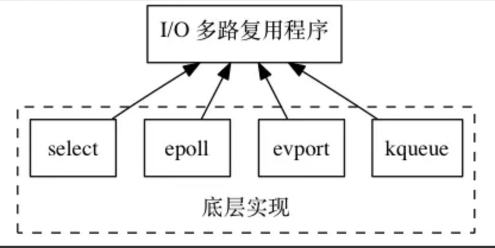
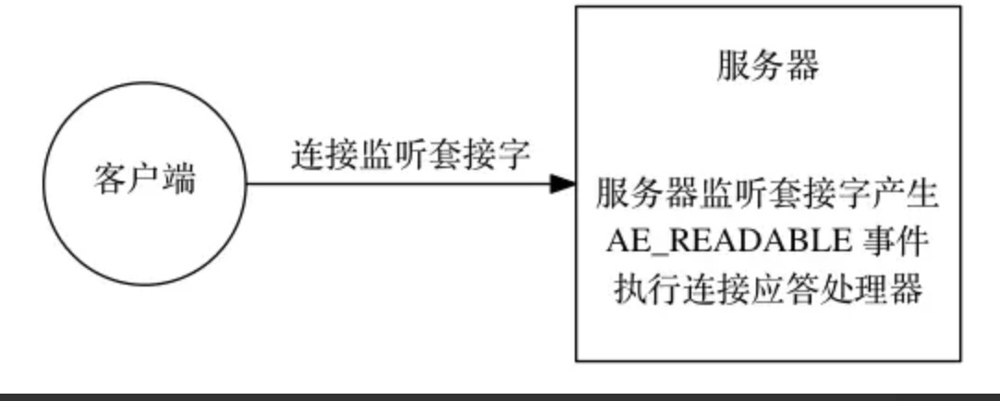
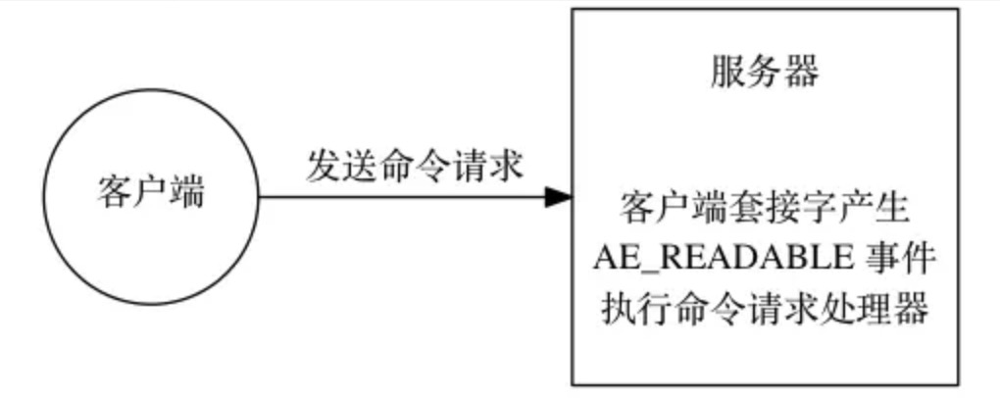
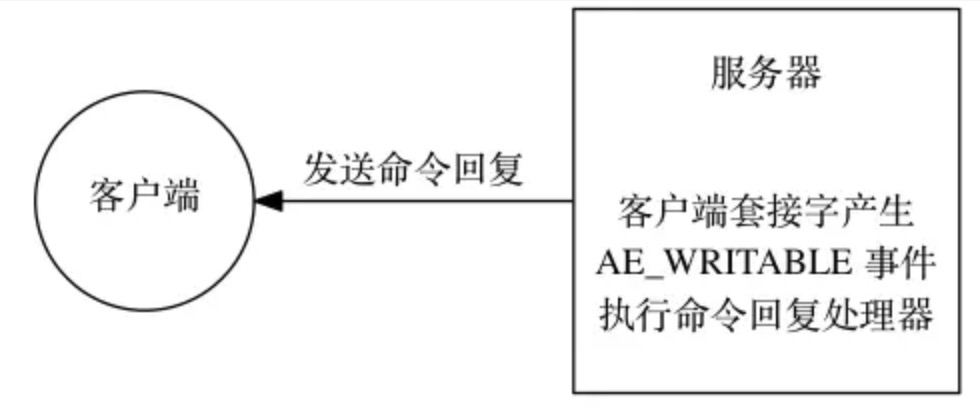
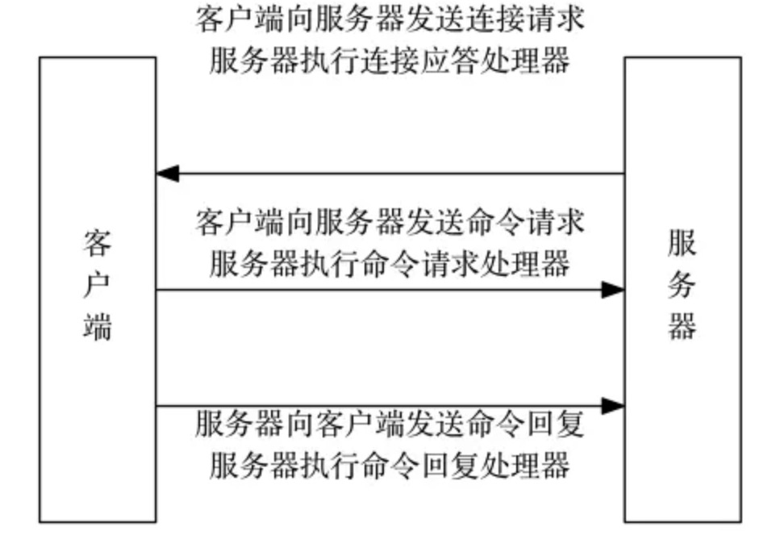
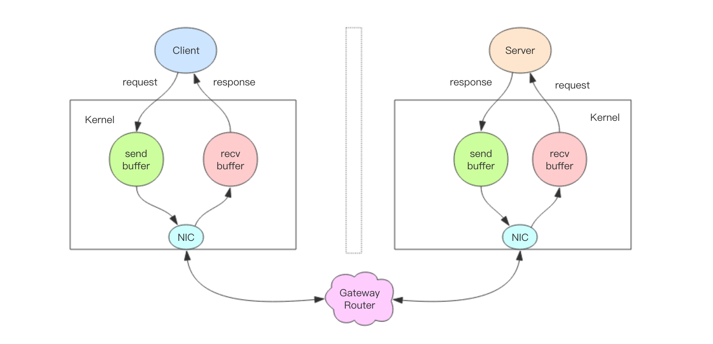
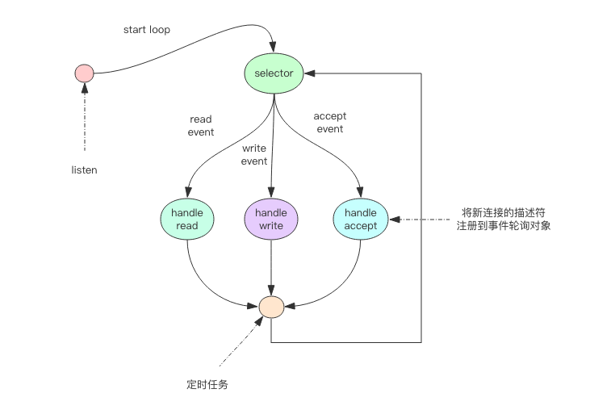

Redis中间件是单线程工作模型
Redis单线程模型也能效率这么高
很多人会怀疑Redis作为一款高并发中间件，怎么会是单线程工作模型，其原因在于：
- 纯内存操作;
- 核心是基于非阻塞的IO多路复用机制;
- C语言实现，一般来说，C语言实现的程序“距离”操作系统更近，执行速度相对会更快;
- 单线程反而避免了多线程的频繁上下文切换问题，预防了多线程可能产生的竞争问题;
Redis单线程模型总结
redis 内部使用文件事件处理器 file event handler，这个文件事件处理器是单线程的，所以 redis 才叫做单线程的模型。它采用 IO 多路复用机制同时监听多个 socket，将产生事件的 socket 压入内存队列中，事件分派器根据 socket 上的事件类型来选择对应的事件处理器进行处理。
文件事件处理器的结构包含 4 个部分：
- 多个 socket
- IO 多路复用程序
- 文件事件分派器
- 事件处理器（连接应答处理器、命令请求处理器、命令回复处理器）
多个 socket 可能会并发产生不同的操作，每个操作对应不同的文件事件，但是 IO 多路复用程序会监听多个 socket，会将产生事件的 socket 放入队列中排队，事件分派器每次从队列中取出一个 socket，根据 socket 的事件类型交给对应的事件处理器进行处理。
来看客户端与 redis 的一次通信过程：
redis-single-thread-model
首先，redis 服务端进程初始化的时候，会将 server socket 的 AE_READABLE 事件与连接应答处理器关联。
客户端 socket01 向 redis 进程的 server socket 请求建立连接，此时 server socket 会产生一个 AE_READABLE 事件，IO 多路复用程序监听到 server socket 产生的事件后，将该 socket 压入队列中。文件事件分派器从队列中获取 socket，交给连接应答处理器。连接应答处理器会创建一个能与客户端通信的 socket01，并将该 socket01 的 AE_READABLE 事件与命令请求处理器关联。
假设此时客户端发送了一个 set key value 请求，此时 redis 中的 socket01 会产生 AE_READABLE 事件，IO 多路复用程序将 socket01 压入队列，此时事件分派器从队列中获取到 socket01 产生的 AE_READABLE 事件，由于前面 socket01 的 AE_READABLE 事件已经与命令请求处理器关联，因此事件分派器将事件交给命令请求处理器来处理。命令请求处理器读取 socket01 的 key value 并在自己内存中完成 key value 的设置。操作完成后，它会将 socket01 的 AE_WRITABLE 事件与命令回复处理器关联。
如果此时客户端准备好接收返回结果了，那么 redis 中的 socket01 会产生一个 AE_WRITABLE 事件，同样压入队列中，事件分派器找到相关联的命令回复处理器，由命令回复处理器对 socket01 输入本次操作的一个结果，比如 ok，之后解除 socket01 的 AE_WRITABLE 事件与命令回复处理器的关联。
补充材料一
以下补充材料来自黄健宏的Redis设计及实现中事件章节内容，读后受益匪浅。
消息处理流程
文件事件处理器使用I/O多路复用(multiplexing)程序来同时监听多个套接字，并根据套接字目前执行的任务来为套接字关联不同的事件处理器。
当被监听的套接字准备好执行连接应答(accept)、读取(read)、写入(write)、关闭(close)等操作时，与操作相对应的文件事件就会产生，这时文件事件处理器就会调用套接字之前关联好的事件处理器来处理这些事件。
尽管多个文件事件可能会并发地出现，但I/O多路复用程序总是会将所有产生事件的套接字都推到一个队列里面，然后通过这个队列，以有序（sequentially）、同步（synchronously）、每次一个套接字的方式向文件事件分派器传送套接字：当上一个套接字产生的事件被处理完毕之后（该套接字为事件所关联的事件处理器执行完毕）， I/O多路复用程序才会继续向文件事件分派器传送下一个套接字。
I/O 多路复用程序的实现
Redis的I/O多路复用程序的所有功能是通过包装select、epoll、evport和kqueue这些I/O多路复用函数库来实现的，每个I/O多路复用函数库在Redis源码中都对应一个单独的文件，比如ae_select.c、ae_epoll.c、ae_kqueue.c等。
因为Redis为每个I/O多路复用函数库都实现了相同的API，所以I/O多路复用程序的底层实现是可以互换的，如下图所示。
有关epoll的详细讲解，可以点击查看，彻底搞懂epoll高效运行的原理
Redis在I/O多路复用程序的实现源码中用#include宏定义了相应的规则，程序会在编译时自动选择系统中性能最好的I/O多路复用函数库来作为Redis的I/O多路复用程序的底层实现：
1 | /* Include the best multiplexing layer supported by this system. |
文件事件的类型
I/O 多路复用程序可以监听多个套接字的ae.h/AE_READABLE事件和ae.h/AE_WRITABLE事件，这两类事件和套接字操作之间的对应关系如下：
当套接字变得可读时（客户端对套接字执行write操作，或者执行close操作），或者有新的可应答（acceptable）套接字出现时（客户端对服务器的监听套接字执行connect操作），套接字产生AE_READABLE 事件。
当套接字变得可写时（客户端对套接字执行read操作），套接字产生AE_WRITABLE事件。I/O多路复用程序允许服务器同时监听套接字的AE_READABLE事件和AE_WRITABLE事件，如果一个套接字同时产生了这两种事件，那么文件事件分派器会优先处理AE_READABLE事件，等到AE_READABLE事件处理完之后，才处理AE_WRITABLE 事件。这也就是说，如果一个套接字又可读又可写的话，那么服务器将先读套接字，后写套接字。
文件事件的处理器
Redis为文件事件编写了多个处理器，这些事件处理器分别用于实现不同的网络通讯需求，常用的处理器如下：
为了对连接服务器的各个客户端进行应答， 服务器要为监听套接字关联连接应答处理器。
为了接收客户端传来的命令请求， 服务器要为客户端套接字关联命令请求处理器。
为了向客户端返回命令的执行结果， 服务器要为客户端套接字关联命令回复处理器。
连接应答处理器
networking.c中acceptTcpHandler函数是Redis的连接应答处理器，这个处理器用于对连接服务器监听套接字的客户端进行应答，具体实现为sys/socket.h/accept函数的包装。
当Redis服务器进行初始化的时候，程序会将这个连接应答处理器和服务器监听套接字的AE_READABLE事件关联起来，当有客户端用sys/socket.h/connect函数连接服务器监听套接字的时候， 套接字就会产生AE_READABLE 事件， 引发连接应答处理器执行， 并执行相应的套接字应答操作，如图所示。
命令请求处理器
networking.c中readQueryFromClient函数是Redis的命令请求处理器，这个处理器负责从套接字中读入客户端发送的命令请求内容， 具体实现为unistd.h/read函数的包装。
当一个客户端通过连接应答处理器成功连接到服务器之后， 服务器会将客户端套接字的AE_READABLE事件和命令请求处理器关联起来，当客户端向服务器发送命令请求的时候，套接字就会产生 AE_READABLE事件，引发命令请求处理器执行，并执行相应的套接字读入操作，如图所示。
在客户端连接服务器的整个过程中，服务器都会一直为客户端套接字的AE_READABLE事件关联命令请求处理器。
命令回复处理器
networking.c中sendReplyToClient函数是Redis的命令回复处理器，这个处理器负责将服务器执行命令后得到的命令回复通过套接字返回给客户端，具体实现为unistd.h/write函数的包装。
当服务器有命令回复需要传送给客户端的时候，服务器会将客户端套接字的AE_WRITABLE事件和命令回复处理器关联起来，当客户端准备好接收服务器传回的命令回复时，就会产生AE_WRITABLE事件，引发命令回复处理器执行，并执行相应的套接字写入操作， 如图所示。
当命令回复发送完毕之后， 服务器就会解除命令回复处理器与客户端套接字的 AE_WRITABLE 事件之间的关联。
一次完整的客户端与服务器连接事件示例
假设Redis服务器正在运作，那么这个服务器的监听套接字的AE_READABLE事件应该正处于监听状态之下，而该事件所对应的处理器为连接应答处理器。
如果这时有一个Redis客户端向Redis服务器发起连接，那么监听套接字将产生AE_READABLE事件， 触发连接应答处理器执行：处理器会对客户端的连接请求进行应答， 然后创建客户端套接字，以及客户端状态，并将客户端套接字的 AE_READABLE 事件与命令请求处理器进行关联，使得客户端可以向主服务器发送命令请求。
之后，客户端向Redis服务器发送一个命令请求，那么客户端套接字将产生 AE_READABLE事件，引发命令请求处理器执行，处理器读取客户端的命令内容， 然后传给相关程序去执行。
执行命令将产生相应的命令回复，为了将这些命令回复传送回客户端，服务器会将客户端套接字的AE_WRITABLE事件与命令回复处理器进行关联：当客户端尝试读取命令回复的时候，客户端套接字将产生AE_WRITABLE事件， 触发命令回复处理器执行， 当命令回复处理器将命令回复全部写入到套接字之后， 服务器就会解除客户端套接字的AE_WRITABLE事件与命令回复处理器之间的关联。
补充材料二
以下补充材料来自老钱的Redis 深度历险：核心原理与应用实践小册中，读后受益匪浅。但是讲解到鞭辟入里–线程 IO 模型章节中有部分内容错误，所以只选取前半部分作为补充材料来加深理解Redis的IO线程模型。
非阻塞IO
当我们调用套接字的读写方法，默认它们是阻塞的，比如read方法要传递进去一个参数n，表示最多读取这么多字节后再返回，如果一个字节都没有，那么线程就会卡在那里，直到新的数据到来或者连接关闭了，read方法才可以返回，线程才能继续处理。而write方法一般来说不会阻塞，除非内核为套接字分配的写缓冲区已经满了，write方法就会阻塞，直到缓存区中有空闲空间挪出来了。
非阻塞 IO 在套接字对象上提供了一个选项Non_Blocking，当这个选项打开时，读写方法不会阻塞，而是能读多少读多少，能写多少写多少。能读多少取决于内核为套接字分配的读缓冲区内部的数据字节数，能写多少取决于内核为套接字分配的写缓冲区的空闲空间字节数。读方法和写方法都会通过返回值来告知程序实际读写了多少字节。
有了非阻塞 IO 意味着线程在读写 IO 时可以不必再阻塞了，读写可以瞬间完成然后线程可以继续干别的事了。
非阻塞 IO 有个问题，那就是线程要读数据，结果读了一部分就返回了，线程如何知道何时才应该继续读。也就是当数据到来时，线程如何得到通知。写也是一样，如果缓冲区满了，写不完，剩下的数据何时才应该继续写，线程也应该得到通知。
事件轮询(IO多路复用)
事件轮询 API 就是用来解决这个问题的，最简单的事件轮询 API 是select函数，它是操作系统提供给用户程序的 API。输入是读写描述符列表read_fds & write_fds，输出是与之对应的可读可写事件。同时还提供了一个timeout参数，如果没有任何事件到来，那么就最多等待timeout时间，线程处于阻塞状态。一旦期间有任何事件到来，就可以立即返回。时间过了之后还是没有任何事件到来，也会立即返回。拿到事件后，线程就可以继续挨个处理相应的事件。处理完了继续过来轮询。于是线程就进入了一个死循环，我们把这个死循环称为事件循环，一个循环为一个周期。
每个客户端套接字socket都有对应的读写文件描述符。
1 | read_events, write_events = select(read_fds, write_fds, timeout) |
因为我们通过select系统调用同时处理多个通道描述符的读写事件，因此我们将这类系统调用称为多路复用 API。现代操作系统的多路复用 API 已经不再使用select系统调用，而改用epoll(linux)和kqueue(freebsd & macosx)，因为 select 系统调用的性能在描述符特别多时性能会非常差。它们使用起来可能在形式上略有差异，但是本质上都是差不多的，都可以使用上面的伪代码逻辑进行理解。
服务器套接字serversocket对象的读操作是指调用accept接受客户端新连接。何时有新连接到来，也是通过select系统调用的读事件来得到通知的。
关注【憨才好运】微信公众号，了解更多精彩内容⬇️⬇️⬇️